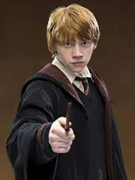

|  | RON WEASLY RON LOVE HERMOINE AND FOOD I'm the sixth in our family to go to Hogwarts. You could say I got a lot to live up to. Bill and Charlie have already left — Bill was Head Boy and Charlie was captain of Quidditch. Now Percy's a prefect. Fred and George mess around a lot, but they still get really good marks and everyone thinks they're really funny. Everyone expects me to do as well as the others, but if I do, it's no big deal, because they did it first." — Ron's family and other's expectations[src] Ronald Bilius[28] "Ron" Weasley (b. 1 March, 1980) was an English pure-blood[2] wizard, the sixth and youngest son of Arthur and Molly Weasley (née Prewett). He was also the younger brother of Bill, Charlie, Percy, Fred, George, and the elder brother of Ginny. Ron and his siblings lived at the The Burrow, on the outskirts of Ottery St Catchpole, Devon. Ron began attending Hogwarts School of Witchcraft and Wizardry in 1991 and was Sorted into Gryffindor House. He soon became close friends with fellow student Harry Potter and later Hermione Granger. Together, they made the Golden trio and faced many challenges during their adolescence, including keeping the Philosopher's Stone from Professor Quirinus Quirrell, rescuing Ginny from the Basilisk of the Chamber of Secrets, saving Harry's godfather Sirius Black from the Dementors of Azkaban, guiding Harry through the Triwizard Tournament, forming Dumbledore's Army and fighting in numerous battles of the Second Wizarding War: including the Battle of the Department of Mysteries (1996), Battle of the Astronomy Tower (1997), and Battle of the Seven Potters (1997). Ron also became a Gryffindor prefect and a Keeper on the Gryffindor Quidditch team during his fifth year at Hogwarts. The character has had immense popularity. The version of Hermione portrayed by Emma Watson in all eight Harry Potter films from Philosopher's Stone in 2001 to Deathly Hallows – Part 2 in 2011 was voted the best female character of all time in a poll conducted amongst Hollywood professionals by The Hollywood Reporter in 2016.[3] Ron began attending Hogwarts School of Witchcraft and Wizardry in 1991 and was Sorted into Gryffindor House. He soon became close friends with fellow student Harry Potter and later Hermione Granger. Together, they made the Golden trio and faced many challenges during their adolescence, including keeping the Philosopher's Stone from Professor Quirinus Quirrell, rescuing Ginny from the Basilisk of the Chamber of Secrets, saving Harry's godfather Sirius Black from the Dementors of Azkaban, guiding Harry through the Triwizard Tournament, forming Dumbledore's Army and fighting in numerous battles of the Second Wizarding War: including the Battle of the Department of Mysteries (1996), Battle of the Astronomy Tower (1997), and Battle of the Seven Potters (1997). Ron also became a Gryffindor prefect and a Keeper on the Gryffindor Quidditch team during his fifth year at Hogwarts. Ron began attending Hogwarts School of Witchcraft and Wizardry in 1991 and was Sorted into Gryffindor House. He soon became close friends with fellow student Harry Potter and later Hermione Granger. Together, they made the Golden trio and faced many challenges during their adolescence, including keeping the Philosopher's Stone |